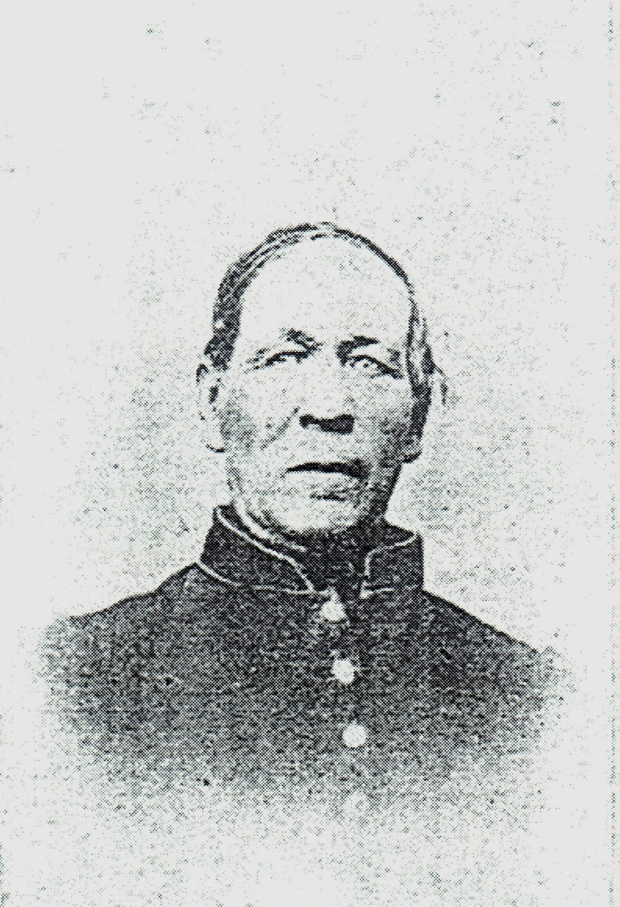

Overview
Purpose
Have you ever hit a brick wall in your research on your family history? Wouldn’t you love it if all the information was in one spot? A One-Name Study is your answer. I am a Genealogist, and I want to make a website studying all the occurrences of the surname ‘Bigney’. At times the surnames in records are misspelled or were misheard, which make records hard to search for. I plan to look for these spelling variations and catalog them in one place. This website can become a great resource for those who are stuck and can’t find the next record for their research.
Audience
Genealogists researching Bigney families and people with Bigney heritage with all its spelling variations is the audience for this website. It is a very limited scope for an audience. There are many countries where people with Bigney heritage came from, including the United States, Canada, England, France, Australia, and Wales and we will target descendants of Bigney families. We will market to the serious researcher as well as those who are novice in their family history.
Branding
Website Logo

Style Guide
Color Palette
Palette URL: https://coolors.co/05668d-ebf2fa-679436-b1cc00-427aa1| Primary | Secondary | Accent 1 | Accent 2 | Accent 3 |
|---|---|---|---|---|
| [#05668D] | [#EBF2FA] | [#679436] | [#B1CC00] | [#4783AE] |
Typography
Heading Font: Fraunces Semi-bold 600
This font matches the Logo font. It is think and has good readability. It also has a historical flair.
Paragraph Font: PT Serif
There is good spacing between the letters and it has a great readability.
Normal paragraph example
BIGUENET, Beguenet: a name pertaining in the 17th century to Blamont, and long settled there. In 1636 we find a family of Biguenet there; in 1655 we note Isaac Beguenet among the townsmen of Blamont. Does the name originate from bégue (stammer) or from beguin (darling, hood, child’s cap) in its various spellings?
Colored paragraph example
Between 1960 and 2004, in the United States, Bigney life expectancy was at its lowest point in 1960, and highest in 2001. The average life expectancy for Bigney in 1960 was 39, and 76 in 2004.
Navigation
Site Map
Content
Home page
A One-Name Study (ONS) is a project researching all occurrences of a surname, as opposed to a particular pedigree (ancestors of one person) or descendancy (descendants of one person or couple).
The objective of a one-name study is not just the collection of data; collection is a means to an end. A one-name study aims to research the genealogy and family history of all persons with a given surname (and its variants). As part of this, it attempts to ascertain such things as –
- The origin of the name or early references
- The name’s meaning: is it patronymic, topographical, toponymic, occupational, etc.? Or a mix of these?
- Relative frequency
- Distribution in geography and time
- Patterns of immigration and emigration
- Name variants and “deviants”
Images for the Home Page
- 
Statistics
This page will show the Relative frequency and distribution in geography and time of the surname Bigney.
Images for the Statistics Page


Contact
This will be the only Bigney Surname Study currently available on the internet. There is no other website currently with all the data in one place. Anyone with questions or additional information will be able to contact me to collaborate.
Images for the Contact Page
Wireframes
Create three wireframes for your site. One for each page and list them here
Home
[Any additional details about home that the wireframe does not make clear]
Statistics
[Any additional details about page 2 that the wireframe does not make clear]
Contact
[Any additional details about page 3 that the wireframe does not make clear]